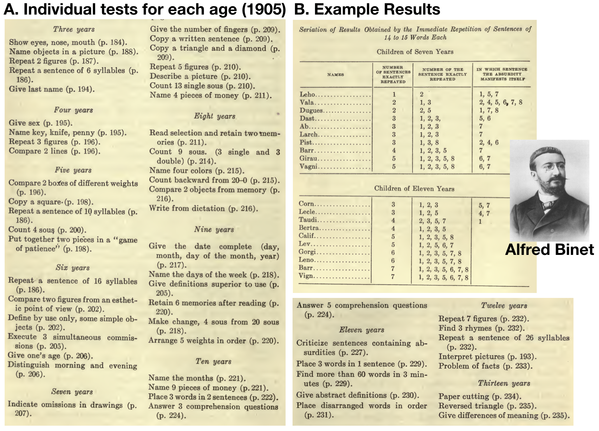

7 4 Intelligence Testing
Abstract
This chapter covers the development of intelligence tests, a look at examples of early intelligence tests and how the tests work, some discussion of the concept of intelligence in relation to these tests, and some historical examples of how the tests were used in the context of the eugenics movement.
Note: my training as a cognitive psychologist mostly skipped over the topic of mental testing, especially the history and development of intelligence tests. This is chapter is an ongoing attempt to organize some of that history and connect it with issues in cognition. I have found the history to be complex and often extremely fraught. Although mental testing is widespread and has many proponents and use cases; mental testing is also intertwined with the eugenics movement, and the practice of mental testing has negatively impacted marginalized groups. The scientific and social merits/pitfalls of intelligence testing have been continuously debated in domains where mental testing has been introduced.
7.0.1 The intelligence test race
The Stanford-Binet test was among the first intelligence tests to be widely adopted and used in America. Alfred Binet (1857-1911) was a French psychologist who published the Binet-Simon test (with his student Theodore Simon) in 1905 (Binet & Simon, 1905b), which described revised intelligence tests Binet was working on for over a decade prior (Nicolas et al., 2014). Lewis Terman was an American psychologist at Stanford University, who helped popularize Binet’s test in America (Terman, 1916), hence Stanford-Binet. Also in 1916, Psychologist Henry Goddard published an English translation (by Elizabeth Kite) of five of Binet’s papers on intelligence testing in a book titled “The Development of Intelligence in Children” (Kite, 1916). The entire book is in the public domain and can be downloaded from the internet archive.
It is convenient to start with the Stanford-Binet test, because Terman and Binet represent somewhat dueling progressive notions (for the time) about how psychological science could and should be used to improve society. These dueling notions involve the nature/nurture debate about the heritability and fixed or flexible nature of mental abilities; and the implications of that debate for enacting social policy that follow from taking different sides of the debate.
In the early 1900s, countries were finding ways to respond to social issues (crime, education, mental healthcare) with social institutions and policies, and academics were discussing how science could make responses more efficient and less resource demanding. The eugenics movement, of which Terman was a strong proponent, billed itself as a progressive movement capable of fixing societies ailments. Social problems were explained by hereditary influences, solutions included measures that would prevent “defective” people from breeding. In the domain of mental health, people labelled “feeble-minded” were institutionalized and placed under care of the state. Building, maintaining, and staffing buildings took resources; but, from the perspective of eugenics, the investment was worth the cost because the institutions allowed “defective” people to be segregated from society. Segregating and institutionalizing people for crimes or mental health reasons was a widespread practice before the advent of mental tests. From Terman’s perspective (Terman, 1916), intelligence tests would have obvious benefits for negative and positive eugenics policies. For negative eugenics, mental testing would make institutionalization even more effective at segregating unwanted people from society. For example, in envisioning how testing could be applied to discover hidden “defective” schoolchildren he wrote, “it is safe to predict that in the near future intelligence tests will bring tens of thousands of these high-grade defectives under the surveillance and protection of society. This will ultimately result in curtailing the reproduction of feeble-mindedness and in the elimination of an enormous amount of crime, pauperism, and industrial inefficiency”. Furthermore, intelligence testing could also be used for positive eugenics, by identifying hidden geniuses and grooming them to become national leaders; Terman wrote, “The number of children with very superior ability is approximately as great as the number of feeble-minded. The future welfare of the country hinges, in no small degree, upon the right education of these superior children.”
Binet did not presume that mental abilities were fixed or inherited, and he argued that presumptions about human intelligence were premature in the absence of rigorous tests providing objective evidence on the matter. Binet was also hired by the French government to address pressing issues in education. For example, without objective mental tests, French schoolchildren were already being divided up into “normal” children, sent to regular school, and “defective” children sent to special schools or otherwise institutionalized. Binet saw the existing methods for deciding the fate of children as deeply flawed, arbitrary, open to numerous forms of bias, and a drain government resources. One set of concerns involved child welfare. The lack of accurate testing meant that some normal children were accidentally being institutionalized for the wrong reasons. Relatedly, Binet speculated that education could improve mental abilities, even of “sub-normal” children. Another set of concerns involved efficiencies for society. Binet also considered that educational resources could be wasted on children not capable of learning. As a progressive, he also envisioned a high-functioning utopian society where science was able to accurately test every person for their aptitudes, and then assign people to tasks in society with utmost efficiency (Binet & Simon, 1908). But, those lofty ideas could not be accomplished without a scientifically accurate intelligence test.
The race to develop intelligence tests was more like a relay race. Researchers were vying to create intelligence tests that withstood scientific and public scrutiny. These tests would be handed off like batons to officials involved in decision-making at the level of social institutions and government. Researchers and practitioners took different sides on the nature/nurture debate and assumed mental abilities were inherited and fixed at birth, or flexibly acquired over development. These assumptions tinted interpretation of test results, and biased decision-making and implementation of social programs. For example, what should happen to children who are mentally inferior according to an intelligence test? A eugenicist and hereditarian might argue these children should be institutionalized and refused education, because they were genetically incapable of learning, would never contribute to society, and worse would further pollute the gene pool if they had children. Alternatively, psychologists like Binet were open to the possibility that mental abilities could be developed and acquired with experience, and that education systems could be improved to meet needs of children with low to high mental abilities. The next sections explore iterations of research that culminated in Binet’s intelligence test; followed by examples of how the tests were applied in the United States.
7.0.1.1 Cattell’s mental tests
We already mentioned that Galton’s research on individual differences in the vividness of mental imagery from 1880, was an early attempt to measure mental abilities associated with intelligence. Galton’s work, including his eugenics ideas, inspired many psychologists to develop better mental tests. For example, James McKeen Cattell (1860-1944), published “Mental tests and Measurements” in 1890 (CATTELL, 1890). Cattell made numerous contributions to American psychology, and continues to be honored by the Association for Psychological Sciences (APS) through their “James McKeen Cattell Fellow Award” for lifetime achievement. Like Galton, Cattell was also a proponent of eugenics.
Here is the first paragraph from Cattell’s paper:
“Psychology cannot attain the certainty and exactness of the physical sciences, unless it rests on a foundation of experiment and measurement. A step in this direction could be made by applying a series of mental tests and measurements to a large number of individuals. The results would be of considerable scientific value in discovering the constancy of mental processes, their interdependence, and their variation under different circumstances. Individuals, besides, would find their tests interesting, and, perhaps, useful in regard to training, mode of life or indication of disease. The scientific and practical value of such tests would be much increased should a uniform system be adopted, so that determinations made at different times and places could be compared and combined.”With a view to obtaining agreement among those interested, I venture to suggest the following series of tests and measurements, together with methods of making them.”
Cattell was corresponding with Galton to make the tests, “meet with his approval”, but he only indirectly references the application of mental testing to the eugenics movement (e.g., “indication of disease”), and he mentions several other reasons to pursue the creation of mental tests. In a footnote, he mentions that, “the nationality (including that of the parents), and the age, sex, occupation and state of health” should all be recorded when participants take the test”. The inclusion of these measurements is consistent with eugenical aims to show that different races had inherited different mental abilities.
Cattell proposed to measure each person on ten tests:
- Dynamometer Pressure, (to measure squeezing hand strength).
- Rate of Movement (how fast you can move your hand).
- Sensation-areas (telling apart two pin-pricks)
- Pressure causing Pain
- Least noticeable difference in Weight
- Reaction-time for Sound
- Time for naming Colours
- Bi-section of a 50 cm line
- Judgment of 10 seconds time
- Number of Letters remembered on once Hearing
You might notice these individual tests range across physical and mental abilities, and none of them measure a complicated concept like human intelligence. At the end of the paper, Cattell lists 50 additional tests for sight (14 tests), Hearing (8 test), Taste and Smell (3 tests), Touch and Temperature (7 tests), Sense of Effort and Movement (4 tests), Mental Time (7 test), Mental intensity (2 tests), and Mental Extensity (5 tests), that he thought should be important for the incoming discipline of Experimental Psychology. Many of the tests became useful for theorizing about how individual psychological processes work.
By 1896, Cattell had moved from Pennsylvania to New York City, where he published measurements of Columbia university students (Cattell & Farrand, 1896). By today’s standards, Cattell’s test might raise privacy concerns about what he was planning to do with the data he collected. Cattell reported statistics on hair and eye color, height and weight, head-size, breathing capacity, color-blindness, vision, color preferences, hearing, pitch-perception, skin-sensation, hand-strength, reaction-time, perception of time and space, memory, and mental imagery. In addition, the examiner who administered the test made separate judgments of each student’s quality (physical goodness, good student, level of intellectual ability, strong-will etc.), based on their professional opinion. Finally, students were given a lengthy questionnaire to report on their family history, medical history, daily behaviors, and preferences (what’s your favorite novel, what gives you pleasure, etc.). Cattell concludes that science should proceed to determine the interrelations between his measurements, and establish how much knowing one thing about a person can predict something else about them. He also concludes that “we must use our measurements to study the development of the individual and of the race, to disentangle the complex factors of heredity and environment”, and that the most important thing that science can do is guide the development of man.
7.0.1.2 Binet’s critiques
Several other psychologists inspired by Galton were also publishing results from their own mental tests around this time, including Hugo Munsterberg (Munsterberg, 1891), J. Allen Gilbert (Gilbert, 1895), and Emil Kraepelin (Kraepelin, 1895). Alfred Binet was among the psychologists interested in mental testing, and well before he published his famous test, he critiqued the existing literature on mental testing in 1895 (Nicolas et al., 2014). Binet pointed out that tests were measuring physical ability (like grip strength) and basic sensory abilities; but, rarely measured what he considered higher mental abilities. Binet proposed that individual differences in higher mental abilities could be measured by simple tests, but only if the tests were mentally challenging. He proposed tests for Memory–drawing a geometric shape from memory, reproducing a sentence from memory, memory for musical notes, memory for a color, memory for 12 objects–tests for Mental Imagery; Imagination; Attention– duration of attention, size of attentional field, performing multiple tasks at once–tests for understanding–give a definition, criticize a sentence–tests for suggestibility; for Aesthetic feeling–what are a persons preferences, are they same as artists?–tests of Moral Feelings; muscular and will power; and motor skill and glance. As Binet might have predicted, Cattell’s initial mental testing program flopped. Cattell tried to demonstrate he could predict students’ grades in college from their scores on his mental test, but he wasn’t able to reliably reproduce the relationship. It seemed obvious that college grades should measure something about mental abilities. If Cattell was measuring mental abilities with his tests, then students with high scores should have high grades, and students with low scores should have low grades. Such a positive correlation would provide validity to Cattell’s mental ability tests. However, multiple attempts to show that test performance positively correlated with grades instead showed no consistent correlation. One interpretation was that Cattell’s tests were not measuring mental abilities like a person’s general intelligence.
7.0.2 Binet-Simon Test (1905-1911)
This section describes the Binet-Simon test in more detail, including summaries of the five papers translated to English in 1916 (Kite, 1916). Many variations of mental tests have been created since the Binet-Simon test, but it still serves as a useful example of an “intelligence” test. I quoted “intelligence” because we can reserve judgment on what the test measures until after we look at it.
Binet and Simon published three papers in 1905 that motivated the need for intelligence testing (Binet & Simon, 1905c), explained the new method (Binet & Simon, 1905b), and demonstrated results measurement of schoolchildren and institutionalized children who had been identified as “subnormal” (Binet & Simon, 1905a).
7.0.2.1 Motivation
We have already discussed some of Binet’s motivations for creating an intelligence test. Decisions about child welfare were being made in France without the benefit of objective tests of mental abilities. Binet observed many opportunities for bias in the procedures for making judgments about children that would determine their futures. He thought an objective test would be a valuable tool to guard against bias, and increase the efficiency of how the state spent resources on social programs like education. As a description of the entire research enterprise, Binet wrote, “When the work, which is here only begun, shall have taken its definite character, it will doubtless permit the solution of many pending questions, since we are aiming at nothing less than the measure of the intelligence; one will thus know how to compare the different intellectual levels not only according to age, but according to sex, the social condition, and to race; applications of our method will be found useful to normal anthropology, and also to criminal anthropology, which touches closely upon the study of the subnormal, and will receive the principal conclusion of our study.” (Binet & Simon, 1905a).
7.0.2.2 Method
Binet created sets of psychological, pedagogical, and medical tests that he used to measure individual differences in children. On the whole, the approach was very similar to Cattell, in the sense that both were measuring as many physical and mental features of children and adults they could feasibly fit into a session where the measurements occurred. The major difference was that Binet had innovated on his psychological questions. Binet had many more than Cattell’s 10 questions, they covered a wider variety of tasks presumed to involve higher order mental abilities, and the questions were tailored for children at different ages, from 3 to 13, in yearly increments of difficulty.
Figure fig-4Binet1 shows individual tasks that were determined to be appropriate to children in each year, from 3 to 13. Binet describes the individual tasks in great detail, along with instructions for administering each test, and scoring of each test.
To give an example of results, panel B shows performance from seven and eleven year old children on the task, “immediate repetition of sentences of 14 to 15 words each”. In this task, a sentence was read aloud to a child, and the child had to repeat back the sentence exactly as many times as they could. Multiple measures of performance were taken, including total number of sentences repeated, and notes about “absurdities”, occurring when the child repeated something that was determined by the examiner to be absurd. There are two important features of the results that were common to all of the tests, and that were fundamental to Binet’s method. First, there were clear differences in task performance between children of different ages. For example, children at age seven recited fewer sentences than children at age eleven. To my eye, the average seven year old in the table (in the middle of the group) repeated about three sentences; whereas, the average eleven year old repeated about five sentences. Second, there were individual differences within children of the same age. Some children at age seven recited one or two sentences and others recited up to four or five sentences.
7.0.2.3 Quantifying mental ability with Age
Binet recognized that human intelligence was a large multi-dimensional concept, but he also sought methods to quantify intelligence in simplified terms that would be familiar and easy to use, like using a ruler to measure length. Binet wanted a test that used numbers like a ruler for intelligence: larger numbers would indicate more intelligence and smaller numbers would indicate less.
One of Binet’s problems was that he had many different varieties of tests, all which gave multiple measures of performance. He wanted to mash together the test results to a single dimension of numbers that would be simple, just like a ruler. Binet chose age in years. Age was simple like a ruler, going up in increments of one year at a time. Children also developed physically and mentally as they grew into adults. Binet’s basic theoretical assumption was that, on average, children’s mental abilities steadily increased every year until they became adults. Thus, children at age seven would have more general intelligence than at age five, and eleven year olds would have more intelligence than ten year olds.
Binet invented a relative scale of measurement to capture his notion of human intelligence. The scale was relative to the average age of children. Adults and children alike could be measured, and the test would return a number in years. A precocious seven year old might have a mental age of eleven, or an adult the mental age of a three year old.
7.0.2.4 Comparison to Norms
Binet was well aware that none of his specific tests measured anything as complicated as intelligence. He wrote, “One test signifies nothing, let us emphatically repeat, but five or six tests signify something. And that is so true that one might almost say, ‘It matters very little what the tests are so long as they are numerous.’” (Binet & Simon, 1911). What mattered more than the individual tests was Binet’s innovation to compare test results from one individual to a larger group of individuals.
Binet employed the concept of average children, and assumed that every year, on average, children made gains in intelligence. He needed real-world estimates of his theoretical average children. To create the estimates he simply measured hundreds of children of different ages on his tests. For example, he gave many three year olds his tests and recorded how they performed. In this way, Binet obtained norms or standards that could be used for comparison. For example, the data on three year olds would show a spread of results. Some three year olds received lower scores, some were in the middle, and some received higher scores on the tests. This spread of results then becomes an empirical standard for the mental abilities of all three year olds.
A parent could have their three year old measured on the tests, and Binet could tell the parent how their child performed relative to the other three year olds he had measured. Or, if a child was tested and scored as having the mental abilities of a seven year old, this would roughly mean that the child performed similarly to the seven year olds that Binet had measured while he was developing his scale.
Basing the measurement of mental abilities on a relative comparison to empirical norms is still very common in modern aptitude testing (e.g., the SAT, ACT, GRE, etc.), and the practice is otherwise known as standardized testing. One intriguing feature of the method is that the norms (e.g., what it means to be an average three year old, or four year old on the test) adjust themselves over time as more measurements are taken. For example, when Binet published his tests, he had only taken a limited number of measurements from three year olds, and these measurements served as the norms for three year olds. However, the norms for three year olds would update themselves as more three year olds were measured in the future.
7.0.2.5 Computing intelligence scores
In 1905, Binet had an unruly number of tests, well over 50; and, part of the testing process was to measure individual children on as many of the tests as possible. How did Binet take performance measurements from all of the tests to arrive at a single value in years that would quantify mental ability? Another way to state this question is to ask, how did Binet calculate average performance for the children in each age group, and how were the results from new children compared to the results from the existing children in Binet’s database?
The answers are that Binet imposed rules for classification, and these rules determined how performance from individual tests were converted into an age in years. Binet experimented with different classification rules.
A potential rule was, “A subject has the intellectual development of the highest age at which he passes all the tests, with the allowance of one failure in the tests for that age. Thus young Ernest has passed all the tests at nine years, except one; he has also passed all the tests at ten years except one; therefore we attribute to him the mental level of ten years.”(Binet & Simon, 1908)
By 1911, Binet settled on a more nuanced point system:
“Here is the rule to follow: take for point of departure, the age at which all the tests are passed; and beyond this age, count as many fifths of a year as there are tests passed. Example: a child of eight years passes all the tests of six years, 2 of seven years, 3 of eight years, 2 of nine years, 1 of ten years; he has therefore the level of six years plus the benefit of eight tests or eight-fifths years, or a year and three-fifths, equaling a level of seven years and three-fifths, or more simply 7.6. This calculation permits the appreciation of the intellectual level by means of a fraction. But it must be well understood that this fraction is so delicate an appreciation, that it does not merit absolute confidence, because it varies appreciably from one examination to another.” (Binet & Simon, 1911).
7.0.2.6 Binet’s use cases
Binet achieved a method that would be used throughout the world to measure mental abilities. There are some strikingly simple properties of the test that make the method very seductive. The big idea was to create a large database of how children of various ages perform mental tasks, and then compare new people measured on the same tasks to the database. This would yield a “mental age”, a simple number that represented mental abilities relative to a large and growing database.
One of Binet’s use cases was to guard against bias when making decisions about child-welfare. Teachers might send children away to institutions just because they were unruly, and without an objective test of mental ability, the teacher could claim the unruly students were mentally unfit for school. Or, some children may have already been unjustly institutionalized, and without any objective way to show these children belong in a regular school, they would be forced to stay in the institution. Indeed, Binet tested institutionalized children (Binet & Simon, 1905c). On the one hand, he used these results to further validate his tests, because he was able to show that institutionalized children had lower “mental ages”, when compared to non-institutionalized children. Thus, low scores on his tests could be used to justify institutionalizing children. On the other hand, Binet also found cases where institutionalized children were shown to be of “normal” intelligence relative to their non-institutionalized peers. Thus, scores on the tests could potentially be used to save some children from institutionalization.
7.0.2.7 Meaning of the measure
We have just reviewed one of the first so-called “intelligence” tests developed by psychologists. However, up to this point we have mostly avoided giving a definition to the word intelligence. So, what is a definition of the word intelligence? And, does the Binet-Simon test actually measure intelligence according to that definition? If not, what does it measure?
Operational definitions are a research tool commonly used in psychology that will help us evaluate these issues. Operational definitions are used by individual researchers to specify the meaning of their own terms. For example, Binet could employ an operational definition of intelligence in terms of his own test. Here, the word intelligence would cease to have any common everyday meaning, and would only be used as a shorthand term to refer to patterns of performance on the test. And of course, just calling a test an “intelligence” test, doesn’t mean that it measures the everyday meaning of intelligence. Clear operational definitions can benefit research because they allow researchers to communicate effectively, with clarity, and with terms that are limited to the context of the research. Operational definitions can also cause confusion, especially when researchers choose terms that already have well-established meaning in everyday usage. For example, using “intelligence” as a name for a test could easily confuse people who might assume the name was actually meaningful with respect to the everyday concept of intelligence.
Considering how operational definitions work, I can not give a clear answer about whether or not Binet’s test actually measures intelligence. There are two problems. First, not everyone agrees on what intelligence is in the first place. Second, without an agreed upon definition, it is difficult to justify why each component of Binet’s test actually measures some component of intelligence in a meaningful way.
Wikipedia gives the following definition of intelligence:
“Intelligence has been defined in many ways: the capacity for logic, understanding, self-awareness, learning, emotional knowledge, reasoning, planning, creativity, critical thinking, and problem-solving. More generally, it can be described as the ability to perceive or infer information, and to retain it as knowledge to be applied towards adaptive behaviors within an environment or context.”
From my perspective, the meaning of intelligence is large, varied, and has different meanings for different people, just like the word cognition. As a result, it is difficult for any test to claim that it measures something as diffuse as intelligence. An analogy might be to music. Imagine someone claiming they had a music test that measured whether a given recording had more or less music, like a person could be claimed to have more or less intelligence. Music is so highly diverse that it would be ridiculous (in my opinion) to try to measure all of music on a single scale with a “music test”. Plus, who get’s to define what music get’s counted as music? The surrounding issues that you might imagine would emerge from debates about a fictional music test, also surround debates about what intelligence tests mean.
Although I won’t say I know what intelligence means, and I won’t claim that the Binet-Simon test measures intelligence, I will claim that the Binet-Simon test can be inspected, and it is possible to assess the meaning of the measurement based on the procedures of testing that Binet described. For example, Binet used a process of trial-and-error to create mini-tests of different abilities that were age-appropriate. Specifically, Binet arranged the tests such that most children of a given age were able to complete the tests assigned to their own age group, and complete the tests assigned to younger age groups, but not complete tests assigned to older age groups. Also, Binet chose tests that produced variation within an age group–some children of the same age would do better or worse on the same test. Binet measured many children of all age groups on the tests. Then he proposed to compare new children, measured on the same tests, to his growing database.
So what does the Binet-Simon test measure? It measures how a child’s performance on Binet’s chosen mini-tests, compares to performance on the same mini-tests by groups of children of different ages. This is not a straightforward measure like a ruler, where one inch on the ruler is one inch in the world. Although the Binet-Simon test produces a number in years, that refers to “mental age”; the number is deceiving because it depends on many components. The components include the actual mini-tests that Binet chose, the children that Binet tested to form the empirical comparison group, and the classification rules that Binet used to assign years to children based on their test performance. Changes to any or all of these many components would change how a child would be scored, and what the score would actually mean.
7.0.3 Mental testing and eugenics in America
After the Binet-Simon test was translated to English, it was popularized in America as the Stanford-Binet test. Even though the test had numerous issues and was not actually a test of intelligence, it was nevertheless used in a widespread way throughout America. Many of the American psychologists who would use the new intelligence test were also advocates and members or leaders in eugenics societies. As a result, intelligence testing was used in America as a tool to further the cause of the eugenics movement.
7.0.3.1 The Alpha-Beta test
In 1917, the same year that America entered World War I, the APA appointed committees to study the situation and prepare for action (Yerkes, 1918), and the National Research Council created a Psychology Committee to examine similar issues (Yoakum & Yerkes, 1920). Many psychologist members of these committees were also members and proponents of eugenics, including: Robert Yerkes, Madison Bentley, Edward Thorndike, John B. Watson, Walter D. Scott, Robert Woodworth, and Carl Seashore (all of whom would take a turn as APA president).
War was a topic of considerable debate among eugenics societies (Kühl, 2013) interested in improving their race over generations. It was clear that many people would perish during war. On the one hand, according to the logic of eugenics if “low-quality” people tended to perish, then war could be positive for eugenics because those people would no longer be around to breed. On the other hand, “high-quality” people could be killed, and that would be a negative because their genes would be lost as well. Additionally, a practical issue stood in the way. There was no way to measure the eugenic quality of soldiers and then use that information to decide who would live or die during war. Eugenicists were advocates of using intelligence tests on soldiers to help make personnel selection decisions: such as who would become an officer, and who would have high probability of being killed by being sent to the front.
American Psychologist Robert Yerkes (APA president in 1917) wanted to establish a “mental census” of Americans, and then use that information to improve American society from a eugenics point of view. Yerkes urged testing of all Americans and organized the largest mass of American men for the draft, administering the test to 1.75 million adults (Yerkes, 1923). There were two versions of the test (inspired by Stanford-Binet). The “alpha” test was created for soldiers who could read, and the “beta” test was created for soldiers who could not.
In his 1923 report, “Eugenic Bearing of Measurements of Intelligence in the United States Army.”, Yerkes describes methods and results from the testing efforts and lists these five main reasons to conduct such widespread testing:
- In the discovery of men whose superior ability recommends their advancement.
- In the prompt segregation in the Development Battalions of intellectually inferior men whose inaptitude would retard the training of the unit.
- In building organizations of equal or appropriate strength.
- In selecting suitable men for various army occupations or for special training in the technical schools.
- In eliminating the feeble-minded.
7.0.3.2 Scientific Racism
Eugenics ideology typically included racist beliefs about the superior or inferior eugenic qualities of different ethnic groups (Turda, 2010). The Alpha-beta tests of 1.75 million American men also yielded results that fit existing eugenic ideology about inherent differences in intelligence between ethnic groups. For example, psychologist Carl Brigham, wrote an entire book analyzing the results of the Alpha-Beta tests (Brigham, 1922). He concluded that white Americans had superior intelligence to black Americans and immigrants. He also created dire warnings about the future of America, suggesting that American intelligence was rapidly declining. He warned that although American deterioration was imminent, it could be prevented through public action and laws. For example, eugenically inferior immigrants could be kept out of the country. And, increased segregation of whites and blacks, along with laws against intermarriage could prevent further mixing of the races.
As we discussed earlier, it is not entirely clear what these so-called intelligence tests measure, or what intelligence itself actually refers to. Nevertheless, proponents of eugenics were quick to claim that results from the tests really did legitimately measure supposedly intrinsic and genetically inherited qualities of humans that made some superior and others inferior. Alternative interpretations, such as the tests measured culturally acquired aptitudes, took additional time to be seriously considered. Unfortunately, racist motivations would continue to daunt intelligence testing in America, and an extended history is beyond the current scope of this chapter. Before we conclude this chapter and examine future developments in the cognitive sciences, I cover two more historical examples related to intelligence testing and American Society.
7.0.3.3 Mental health
The eugenics movement deeply impacted public policy and stigma around mental health. We already mentioned that American eugenics proponents successfully petitioned for laws to legalize forcible sterilization of people deemed to be “feeble-minded”. The invention of intelligence tests was heralded as a new scientific tool for the identification of “feeble-minded” people, so that they could be segregated and/or sterilized. Psychologist Henry Goddard provides a case example of connecting intelligence testing to the eugenics agenda for treating mental health issues.
Goddard was director of research at the Vineland Training School for Feeble-Minded Girls and Boys in Vineland, New Jersey. He also arranged for the English translation of Binet’s work in 1916 (Kite, 1916). Robert Yerkes visited Goddard and used his facilities at Vineland during the development of the Alpha-Beta test. Goddard was heavily involved in eugenics, and one illustrative example is from his 1927 article, “Who is a Moron?” (Goddard, 1927).
Goddard describes new terms for categorizing levels of “feeble-mindedness” based on intelligence tests. For example, “idiots” had the mental age of two-year old children, “imbeciles” had the intelligence of three to seven year olds. Goddard invented the term “moron” to describe people with the same supposed intelligence as eight to twelve year olds. The rest of the article describes eugenic ideology in the form of panic about how society is in danger unless it acts to solve the moron problem. The morons were a problem because they appeared normal, and might only be identified with an intelligence test. As a result, hidden morons passing as normal people were running amok in society, and they also had many children, so they were potentially deteriorating the gene-pool by breeding. He considered extreme eugenic solutions, and wrote, “perhaps our ideal should be to eventually eliminate all the lower grades of intelligence and have no one who is not above the twelve-year intelligence level”, but he also cautioned that eliminating half of society would be impossible and even undesirable. Instead, Goddard proposed that morons could be cured through education, and become very useful to society as workers who would very happily do the jobs they were trained to do.
The issues in mental health were similar to what happened in the military. Intelligence tests were forwarded as legitimate scientific measures of human quality and used to make decisions about the welfare of American citizens and their position in society.
7.0.3.4 Education and The Black Psychologists
As a final example, the methods involved in intelligence testing became widespread in education in the form of standardized testing. Similar to previous examples, proponents of eugenics were involved in these efforts. For example, the SAT was created by Carl Brigham shortly after he published his book on “A study of American Intelligence” (Brigham, 1922). The eugenical ideals were that tests could be used to sort children in terms of their quality, and then give more resources to the education of superior children, and fewer resources to the education of inferior children.
Testing of American children showed achievement gaps between different ethnic groups. And, to fast forward into the 1960s, there was growing concern among Black Psychologists (only 1% of a primarily white discipline at the time) that educational testing and decision-making policy was harming outcomes for Black children. In 1968, the Association of Black Psychologists (ABPsi) was formed as a national organization during the San Francisco meeting of the American Psychological Association (APA) (for a more complete history see, R. Williams, 1974). The ABPsi was formed both to address needs within the small community of Black Psychologists that were not being met by the APA, and to petition the APA to address many broader concerns. For example, the ABPsi adopted the following statement on testing:
“The Association of Black Psychologists fully supports those parents who have chosen to defend their rights by refusing to allow their children and themselves to be subjected to achievement, intelligence, aptitude and performance tests, which have been and are being used to:
- Label black children as uneducable;
- Place black children in special classes;
- Potentiate inferior education; .
- Assign black children to lower educational tracks than whites:
- Deny black children higher educational opportunities; and
- Destroy positive intellectual growth and development of black children.”
The ABPsi’s calls for a moratorium on testing (Graves & Mitchell, 2011; see also, R. L. Williams & Mitchell, 1978) in 1969 were not supported by the APA , whose membership also had financial interests in the large educational testing industry. Although there were efforts to maintain a relationship with the APA, the ABPsi became a distinct professional organization and has been publishing its own journal since 1974. ABPsi has been on the forefront of modern research on the impact and legacy of eugenics and racism in Psychology. Finally, although testing is still widespread in America, a moratorium on intelligence testing of Black children was accomplished in 1979 through advocacy of Black Psychologists in California (Frisby & Henry, 2016), where the practice remains illegal.
7.0.4 Cognition: Testing abilities vs. testing theories
This textbook is aimed at providing an overview of research into cognition. One piece of that history involves psychologists who were advocates of the eugenics movement who created tests of cognitive abilities with the purpose of applying those tests on society to further the aims of the eugenics movement. The role of eugenics in motivating the need to create tests of cognitive ability, and in spreading the use of those tests across society is not commonly discussed in introductory textbooks. However, the historical context raises important questions about how the enterprise of scientific research contributes to societies that fund it, and we should be mindful of these issues as we move onto other topics in cognition. For example, it is clear that psychologists researching human cognition can produce tools of questionable merit that become widely adopted in society, and that continue to have positive and negative outcomes for different groups of people in society.
The next chapter transitions to more conventional areas in cognitive psychology, like the domains of learning and memory. We will encounter more examples of cognitive tasks that are very similar, if not essentially the same, as the mini-tests used as part of intelligence scales. However, rather than testing for the purpose of measuring and classifying the qualities of people, we will discuss examples where cognitive tasks are used to test theories and claims about how cognition works.
7.0.5 Appendix
7.0.5.1 References
Binet, A., & Simon, T. (1905a). Application of the New Methods to the Diagnosis of the Intellectual Level among Normal and Subnormal Children in Institutions and in the Primary Schools. L’Année Psychologique, 12, 245–336.
Binet, A., & Simon, T. (1905b). New methods for the diagnosis of the intellectual level of subnormals. L’Année Psychologique, 12, 191–244.
Binet, A., & Simon, T. (1905c). Upon the Necessity of Establishing a Scientific Diagnosis of Inferior States of Intelligence. L’Année Psychologique, 12, 163–191.
Binet, A., & Simon, T. (1908). The Development of Intelligence in the Child. L’Année Psychologique, 1–90.
Binet, A., & Simon, T. (1911). New investigations upon the measure of the intellectual level among school children. L’Année Psychologique, 145–201. https://doi.org/c4b7b9
Brigham, C. C. (1922). A study of American intelligence. Princeton: Princeton University Press; London: Oxford University Press ….
CATTELL, J. McK. (1890). V.—MENTAL TESTS AND MEASUREMENTS. Mind, os-XV(59), 373–381. https://doi.org/dhn9nc
Cattell, J. M., & Farrand, L. (1896). Physical and mental measurements of the students of Columbia University. Psychological Review, 3(6), 618. https://doi.org/ckms9q
Frisby, C. L., & Henry, B. (2016). Science, Politics, and Best Practice: 35 Years After Larry P. Contemporary School Psychology, 20(1), 46–62. https://doi.org/gkzfj6
Gilbert, J. A. (1895). THE MENTAL AND PHYSICAL DEVELOPMENT OF SCHOOL CHILDREN.—(I). The Journal of Education, 42, 291–292.
Goddard, H. H. (1927). Who is a moron? The Scientific Monthly, 24(1), 41–46.
Graves, S., & Mitchell, A. (2011). Is the Moratorium Over? African American Psychology Professionals’ Views on Intelligence Testing in Response to Changes to Federal Policy. Journal of Black Psychology, 37(4), 407–425. https://doi.org/d56z38
Kite, E. S. (1916). The development of intelligence in children (The Binet-Simon Scale). Williams & Wilkins Company.
Kraepelin, E. (1895). Der psychologische Versuch in der Psychiatre. Psychologische Arbeiten, 1, 1–92.
Kühl, S. (2013). For the Betterment of the Race - The Rise and Fall of the International Movement for Eugenics and Racial Hygiene. Palgrave Macmillan. https://www.palgrave.com/gp/book/9781137286116
Munsterberg, H. (1891). Zur individual Pscyhologie. Centralblatt Fur Nervenheilkund Und Psychiatrie, 2, 196–198.
Nicolas, S., Coubart, A., & Lubart, T. (2014). The program of individual psychology (1895-1896) by Alfred Binet and Victor Henri. LAnnee Psychologique, Vol. 114(1), 5–60. https://www.cairn.info/revue-l-annee-psychologique1-2014-1-page-5.htm
Terman, L. M. (1916). The Measurement of intelligence: An explanation of and complete guide for the use of the stanford revision and extension of the Binet-Simon Intelligence Scale. Houghton Mifflin. https://books.google.com?id=qtmdqoFx55YC
Turda, M. (2010). Race, science, and eugenics in the twentieth century. The Oxford Handbook of the History of Eugenics, 62–79.
Williams, R. (1974). A History of the Association of Black Psychologists: Early Formation and Development. Journal of Black Psychology, 1(1), 9–24. https://doi.org/gg3hq4
Williams, R. L., & Mitchell, H. (1978). What Happened to ABPsi’s Moratorium on Testing: A 1968 to 1977 Reminder. Journal of Black Psychology, 4(1-2), 25–42. https://doi.org/gg6btt
Yerkes, R. M. (1918). Psychology in relation to the war. Psychological Review, 25(2), 85–115. https://doi.org/dhdj4j
Yerkes, R. M. (1923). Eugenic Bearing of Measurements of Intelligence in the United States Army. The Eugenics Review, 14(4), 225–245.
Yoakum, C. S., & Yerkes, R. M. (1920). Army mental tests. H. Holt.